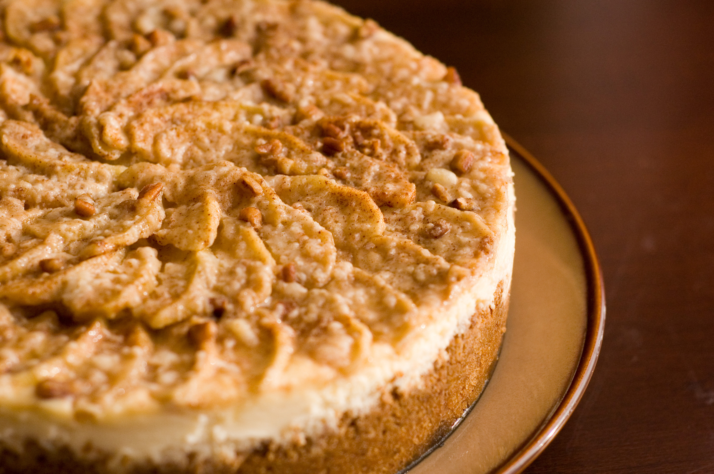

Autumn Cheesecake

Description
This is a delicious Apple Cheesecake that I usually make in the fall.
Nutrition Info
- Prep: 30 mins
- Cook: 1 hr 10 mins
- Additional: 2 hrs 20 mins
- Total: 4 hrs
- Servings: 12
- Yield: 1 - 9 inch springform
Ingredients
- 1 cup graham cracker crumbs
- ½ cup finely chopped pecans
- 3 tablespoons white sugar
- ½ teaspoon ground cinnamon
- ¼ cup unsalted butter, melted
- 2 (8 oz) packages cream cheese, softened
- ½ cup white sugar
- 2 eggs
- ½ teaspoon vanilla extract
- 4 cups apples - peeled, cored, and thinly sliced
- ⅓ cup white sugar
- ½ teaspoon ground cinnamon
- ¼ cup chopped pecans
Steps
- Preheat oven to 350 degrees F (175 degrees C). In a large bowl, stir together the graham cracker crumbs, 1/2 cup finely chopped pecans, 3 tablespoons sugar, 1/2 teaspoon cinnamon and melted butter; press into the bottom of a 9 inch springform pan. Bake in preheated oven for 10 minutes.
- In a large bowl, combine cream cheese and 1/2 cup sugar. Mix at medium speed until smooth. Beat in eggs one at a time, mixing well after each addition. Blend in vanilla; pour filling into the baked crust.
- In a small bowl, stir together 1/3 cup sugar and 1/2 teaspoon cinnamon. Toss the cinnamon-sugar with the apples to coat. Spoon apple mixture over cream cheese layer and sprinkle with 1/4 cup chopped pecans.
- Bake in preheated oven for 60 to 70 minutes. With a knife, loosen cake from rim of pan. Let cool, then remove the rim of pan. Chill cake before serving.